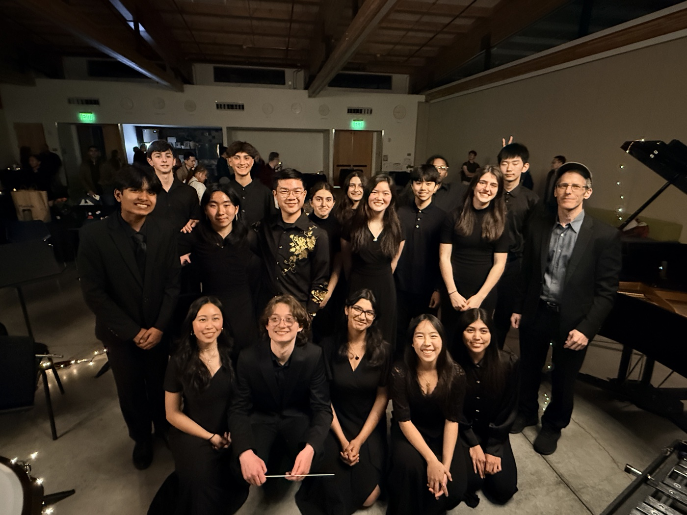
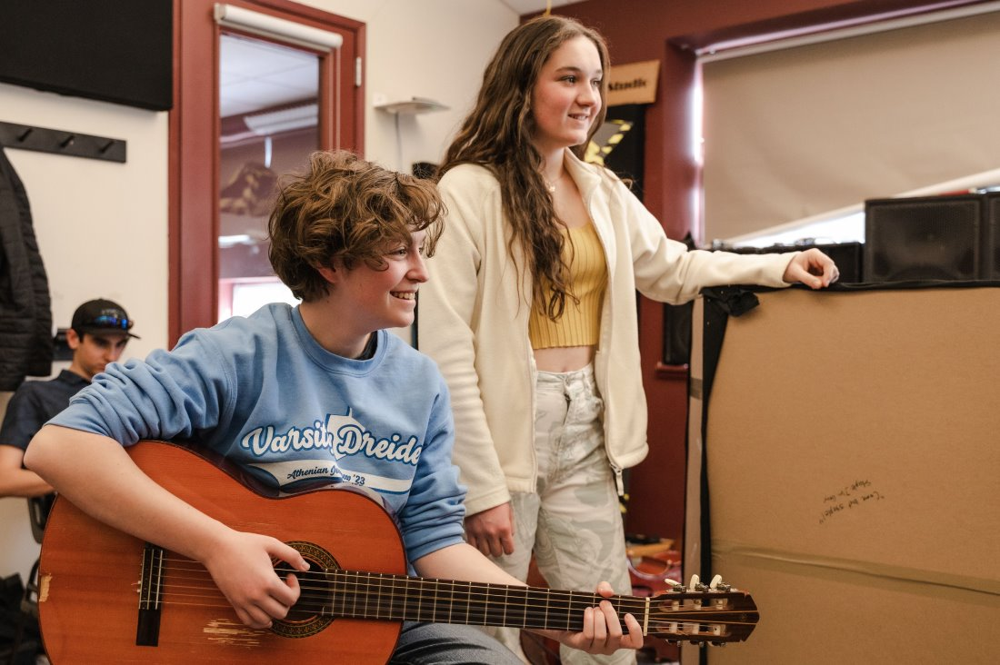
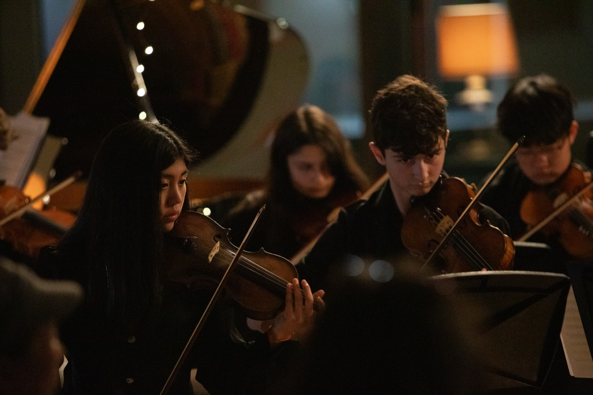
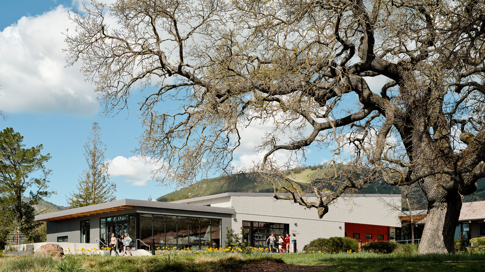

Music lessons for every child, not just those who can afford them
Meaning in Music is a student-run nonprofit founded at The Athenian School in Danville, California. High school musicians teach free, one-on-one lessons to younger students across the Bay Area, and we loan instruments to families who need them.

Any kid who wants to learn music should get to, whatever their family can afford. We do that with free lessons from high school instructors, a lending library of donated instruments, and fundraising for school music programs that need help.
How it started
Those of us who grew up playing had a few things in common: a parent who could pay for lessons, an instrument at home, and usually a school orchestra or band to join. Plenty of kids a few miles away had none of those. Lessons around here run $50 to $80 an hour, a starter instrument costs a few hundred dollars, and at least one district near us has no elementary music program at all.
So in the fall of 2022 we started doing what we were actually able to do. We asked classmates who wanted to teach. We wrote a letter to our neighbors asking for instruments that were sitting unused in closets and garages. We posted on elementary school Facebook pages. Our first calls with families happened that October.
Those calls were the best part. A parent would tell us their daughter had taught herself to read music, or that their son's school didn't have a music class to join. Then we'd talk to the kid, who usually had a song in mind already.

What a weekly lesson actually does
Learning to read notes matters, and so does practicing scales. But we think the most important part of a lesson is simpler than that: an older kid shows up every week, knows your name, remembers the song you were stuck on, and is genuinely happy when you get it.
That's what a lot of us had growing up, and it's the reason we kept playing. It's also why every kid gets their own teacher instead of a spot in a group class.
Who it's for
Parents and guardians
It costs nothing. You fill out a form, we have a short call with you and your kid, and we match them with a teacher. If they need an instrument to start, we lend one.
Kids
Thirty minutes a week with a teacher who plays your instrument and wants to hear what you've been practicing. You pick the songs as much as we do.
High school musicians
You get a real student from your first week. We help you plan lessons, and you'll find out quickly that explaining something is harder than playing it.
Schools and community groups
We can come play for your students, help spread the word about lessons, and send donated instruments to music programs that need them.

Where the money goes
Nobody at Meaning in Music is paid. The teachers, the organizers, and the person who built this website are all high school students. What we raise goes to instruments and repairs, lesson books and sheet music, and school music programs that need help.
We're working toward 501(c)(3) status so we can apply for more grants and reach more kids. A donated guitar, a few dollars from a bake sale, and a grant all end up the same way: as lessons.
What we try to stick to
Love of playing
We started this because we love music. We want kids to love it too, not just get through it.
Showing up
Lessons happen every week and instruments get delivered. We'd rather do small things reliably than big things once.
Keeping count
We track lessons taught, kids taught, and hours played, because that's how we know whether this is working.
Any kid, any music
Classical, pop, whatever a kid wants to play. Music belongs to every kid, whatever their background.
Relationships first
Kids keep playing when someone they look up to is in their corner. The relationship is the point.
Where we come from
Meaning in Music began at The Athenian School, a school in Danville at the foot of Mount Diablo that puts a lot of weight on service and leadership.
We know we've been lucky. Most of us have had good teachers, good instruments, and parents who drove us to rehearsals. This is our way of passing some of that along to kids who live a few miles away and haven't had the same luck.
The Athenian School · 2100 Mount Diablo Scenic Blvd, Danville, CA 94506

If you want to help
Sign up a kid for lessons, teach with us, give an instrument, or just tell a family who might want this. Any of those helps.